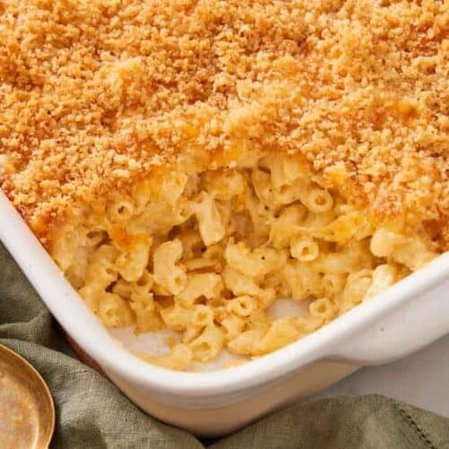

Mac and Cheese

Baked macaroni and cheese with crispy bread crumb crust
Tired of the same old worn out box macaroni and cheese? Want a killer side dish that pairs will with just about everything and only requires a bit more effort?
Well scroll down and take a gander at this here macaroni and cheese recipe. It takes a smidge more elbow grease than your traditional stuff out of the box, but it'll knock your socks off in terms of it's cheesey, ooey gooey sauce and depth of flavor.
Ingredients:
- 16 oz mixed, shredded cheese - Any cheese works, sharp cheddar is a good place to start
- 1/2 cup Panko bread crumbs
- 1/2 - 1 box pasta - Depending on how gooey you want it in the end, less pasta = more sauce per bit
- 1/4 cup butter
- 1/4 cup flour
- 3 cups of milk
- White pepper - To taste
- Cayenne - To taste
- 1/4 tsp Worchestershire Sauce
- 1/4 tsp dried thyme
- Pinch of nutmeg
- 1 tsp Dijon mustard
Steps: